I started my journey in undergrad major in product design in UoN, because I thought this is “cool”, turned out I’m actually right
---I’m serious, designers are the coolest people on this planet (no offense).
click to play ♪
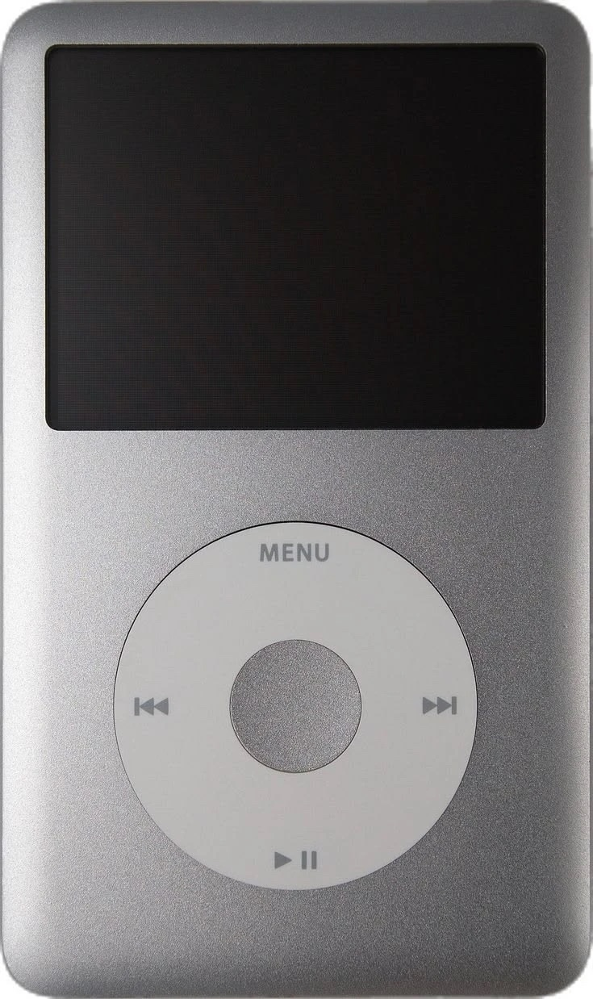
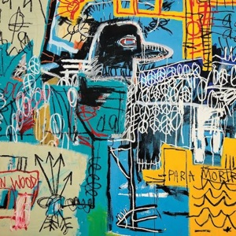
i just wanna be one of the strokes
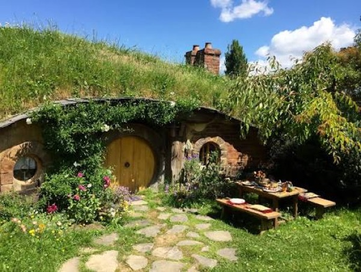
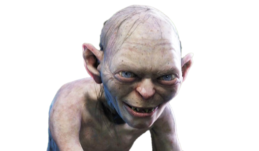
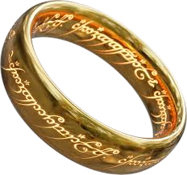
i rewatch the lord of the rings and the hobbit every year
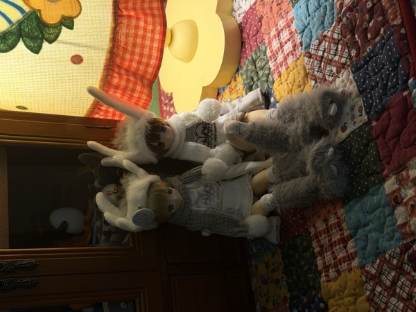
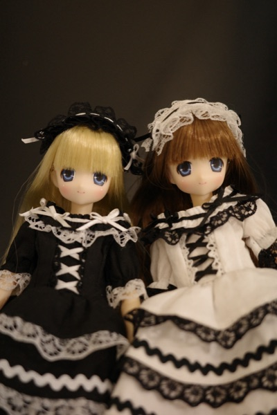
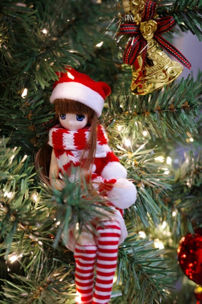
first thing i buy when i got my scholarship money
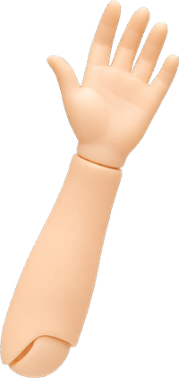
i love doing crafts
arguably the best holiday movies
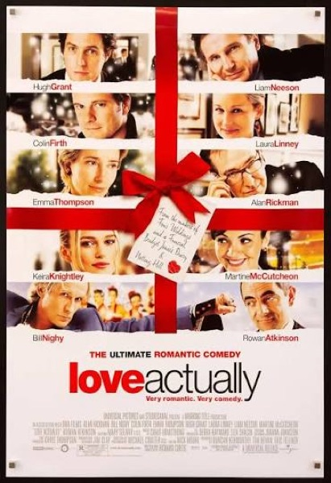
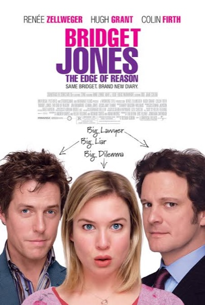
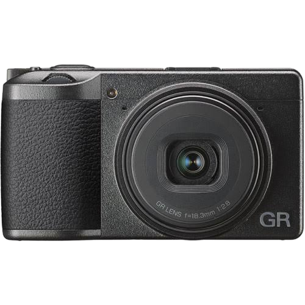
i take RICOH GR3x everywhere i go
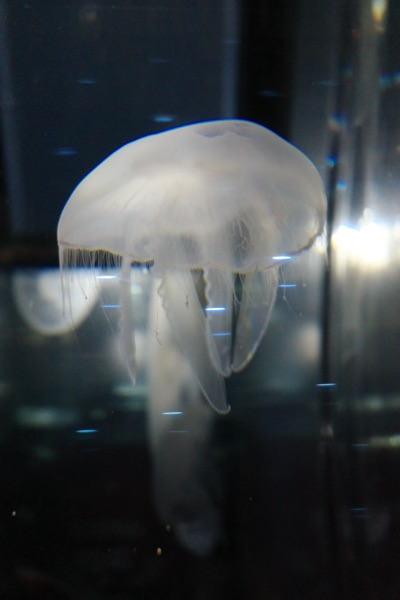
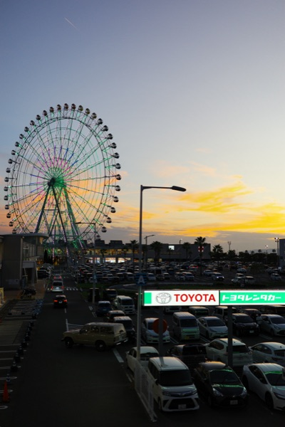
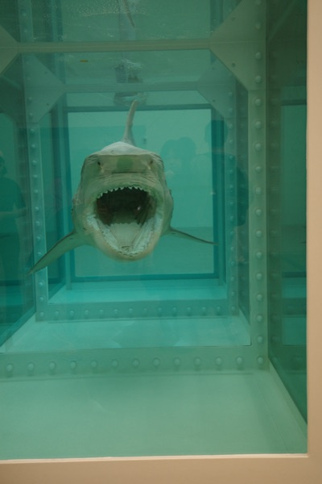
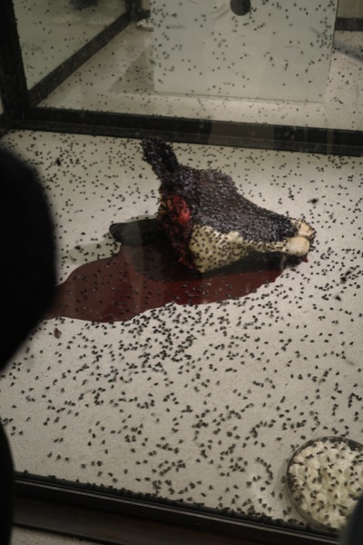
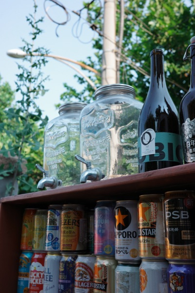
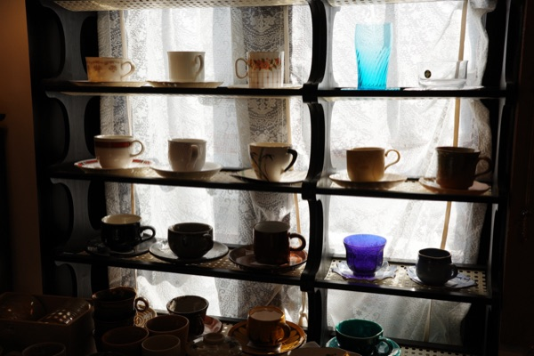
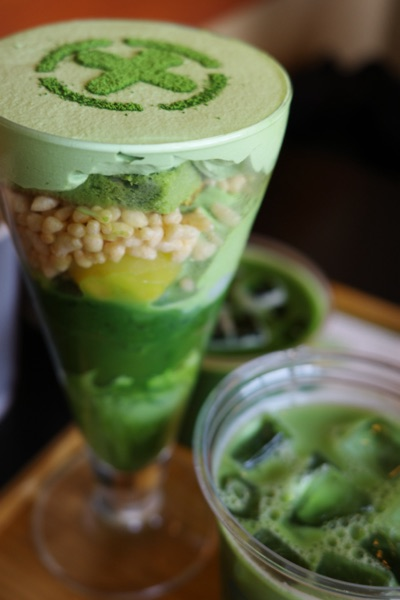
I started my journey in undergrad major in product design in UoN, because I thought this is “cool”, turned out I’m actually right
---I’m serious, designers are the coolest people on this planet (no offense).
I’ve always wondered how I could help make the world a better place.
I once dreamed of becoming a lawyer, advocating for others and fighting for justice. Today, I pursue that same purpose through design, creating meaningful experiences for a certain community and amplifying their voice.
To me, design is a intersection of intention, empathy and craft, and a little bit of beauty. Design is never about technical skills, but it’s always about people: how deeply it resonates with them, and how meaningfully it shapes the way they feel, think, and live.